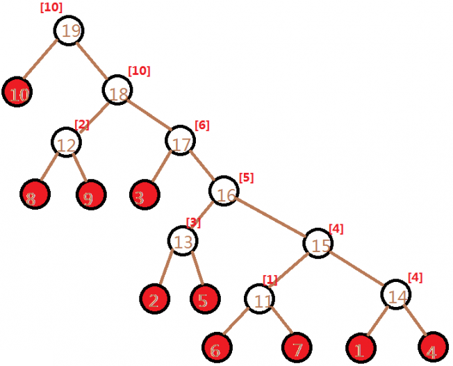

kruskal重构树
我们回想一下
先将边按边权从小到大排序,然后依次加入
如果
否则连接
连接
代码：
void kruskal(){
int x,y,tt=n;
sort(E+1,E+m+1);//将边排序
Fur(i,1,n)fa[i]=i;
Fur(i,1,m){
x=gf(E[i].x),y=gf(E[i].y);
if(x==y)continue;//如果已经联通则跳过
ne[++tt]=E[i].w;//点权赋值为边权
fa[x]=fa[y]=fa[tt]=tt;
f[0][x]=f[0][y]=tt;
//维护并查集
add(tt,x);add(tt,y);//连边t→x,t→y
}
}
原树的节点个数变成2n-1个- 是一个二叉树
- 如果是按最小生成树建立的话是一个大根堆
- 任意两个点路径上边权的最大值为它们的LCA的点权
- 重构树中代表原树中的点的节点全是叶子节点,其余节点都代表了一条边的边权。
例题：
LG 4197 Peaks
题意：
在Bytemountains有
现在有
题解：
可以算是
建完
那么我们可以用
给出重构后的图(帮助理解)：

(红色的是原来的节点)
可以倍增求出最远的满足要求的祖先
#include<bits/stdc++.h>
#define il __inline__ __attribute__ ((always_inline))
#define Fur(i,x,y) for(int i(x);i<=y;++i)
#define Fdr(i,x,y) for(int i(x);i>=y;--i)
#define fl(i,x) for(int i(head[x]),to;to=e[i].to,i;i=e[i].nxt)
#define clr(x,y) memset(x,y,sizeof(x))
#define l2(n) ((int)(log2(n)))
#define inf 2122219134
il int MIN(int x,int y){return x<y?x:y;}
using namespace std;
namespace IO{const int str=1<<20;static char in_buf[str],*in_s,*in_t;bool __=0;il char gc(){return (in_s==in_t)&&(in_t=(in_s=in_buf)+fread(in_buf,1,str,stdin)),in_s==in_t?EOF:*in_s++;}il void in(string &ch){ch.clear();if(__)return;char c;while((c=gc())!=EOF&&isspace(c));if(c==EOF){__=1;return;}ch+=c;while((c=gc())!=EOF&&!isspace(c))ch+=c;if(c==EOF)__=1;}il void in(char &ch){if(__)return;char c;while((c=gc())!=EOF&&isspace(c));if(c==EOF)__=1;else ch=c;}il void in(char *ch){*ch='\0';if(__)return;char c;while((c=gc())!=EOF&&isspace(c));if(c==EOF){__=1;return;}*ch=c;ch++;while((c=gc())!=EOF&&!isspace(c))*ch=c,ch++;if(c==EOF)__=1;*ch='\0';}template<typename T>il void in(T &x){if(__)return;char c=gc();bool f=0;while(c!=EOF&&(c<'0'||c>'9'))f^=(c=='-'),c=gc();if(c==EOF){__=1;return;}x=0;while(c!=EOF&&'0'<=c&&c<='9')x=x*10+c-48,c=gc();if(c==EOF)__=1;if(f)x=-x;}template<typename T,typename ... arr>il void in(T &x,arr & ... y){in(x),in(y...);}const char ln='\n';static char out_buf[str],*out_s=out_buf,*out_t=out_buf+str;il void flush(){fwrite(out_buf,1,out_s-out_buf,stdout);out_s=out_buf;}il void pt(char c){(out_s==out_t)?(fwrite(out_s=out_buf,1,str,stdout),*out_s++=c):(*out_s++=c);}il void out(const char* s){while(*s)pt(*s++);}il void out(char* s){while(*s)pt(*s++);}il void out(char c){pt(c);}il void out(string s){for(int i=0;s[i];i++)pt(s[i]);}template<typename T>il void out(T x){if(!x){pt('0');return;}if(x<0)pt('-'),x=-x;char a[50],t=0;while(x)a[t++]=x%10,x/= 10;while(t--)pt(a[t]+'0');}template<typename T,typename ... arr>il void out(T x,arr & ... y){out(x),out(y...);}}using namespace IO;
#define N 200011
#include<bits/stdc++.h>
namespace ZDY{
#pragma GCC optimize(3)
#define il __inline__ __attribute__ ((always_inline))
#define register
#define ll long long
#define ull unsigned long long
#define db double
#define sht short
#define MB template <class T>il
#define Fur(i,x,y) for(int i(x);i<=y;++i)
#define Fdr(i,x,y) for(int i(x);i>=y;--i)
#define fl(i,x) for(int i(head[x]),to;to=e[i].to,i;i=e[i].nxt)
#define clr(x,y) memset(x,y,sizeof(x))
#define cpy(x,y) memcpy(x,y,sizeof(x))
#define fin(s) freopen(s".in","r",stdin)
#define fout(s) freopen(s".out","w",stdout)
#define fcin ios::sync_with_stdio(false)
#define l2(n) ((int)(log2(n)))
#define inf 2122219134
MB T ABS(T x){return x>0?x:-x;}
MB T MAX(T x,T y){return x>y?x:y;}
MB T MIN(T x,T y){return x<y?x:y;}
MB T GCD(T x,T y){return y?GCD(y,x%y):x;}
MB void SWAP(T &x,T &y){T t=x;x=y;y=t;}
}using namespace ZDY;using namespace std;
#define N 200011
int n,m,q,SZ=0,rt[N];
struct node{
int v,p;
il bool operator<(node x){return v<x.v;}
}b[N];
int a[N],c[N];
struct link{
int x,y,w;
il bool operator<(link x){return w<x.w;}
}E[500011];
void init(){
in(n,m,q);
Fur(i,1,n)in(b[i].v),b[i].p=i;
sort(b+1,b+n+1);
b[0].v=-inf;
sort(b+1,b+n+1);
Fur(i,1,n){
SZ+=(b[i].v!=b[i-1].v);
c[a[b[i].p]=SZ]=b[i].v;
}
Fur(i,1,m)in(E[i].x,E[i].y,E[i].w);
}
int fa[N],f[21][N];
int gf(int x){return (x==fa[x])?x:(fa[x]=gf(fa[x]));}
struct tree{
int s[N*20],sz=0,ls[N*20],rs[N*20];
void build(int l,int r,int &x){
s[x=++sz]=0;
if(l==r)return;
int m=(l+r)>>1;
build(l,m,ls[x]);
build(m+1,r,rs[x]);
}
void ins(int l,int r,int v,int &x,int pre){
x=++sz;
s[x]=s[pre]+1;
ls[x]=ls[pre];
rs[x]=rs[pre];
if(l==r)return;
int m=(l+r)>>1;
if(v<=m)ins(l,m,v,ls[x],ls[pre]);
else ins(m+1,r,v,rs[x],rs[pre]);
}
int ask(int l,int r,int k,int x,int y){
if(l==r)return l;
int m=(l+r)>>1,sum=s[rs[y]]-s[rs[x]];
if(k<=sum)return ask(m+1,r,k,rs[x],rs[y]);
else return ask(l,m,k-sum,ls[x],ls[y]);
}
}T;
int cnt=0,head[N];
struct edge{
int to,nxt;
}e[N*2];
il void add(int x,int y){e[++cnt].to=y;e[cnt].nxt=head[x];head[x]=cnt;}
int L[N],R[N],dfn=0;
void dfs(int x){
Fur(i,1,20)f[i][x]=f[i-1][f[i-1][x]];
L[x]=dfn;
if(!head[x]){
L[x]=++dfn;
T.ins(1,SZ,a[x],rt[dfn],rt[dfn-1]);
R[x]=dfn;
return;
}
fl(i,x)dfs(to);
R[x]=dfn;
}
int ne[N];
void kruskal(){
int x,y,tt=n;
sort(E+1,E+m+1);
Fur(i,1,n)fa[i]=i;
Fur(i,1,m){
x=gf(E[i].x),y=gf(E[i].y);
if(x==y)continue;
ne[++tt]=E[i].w;
fa[x]=fa[y]=fa[tt]=tt;
f[0][x]=f[0][y]=tt;
add(tt,x);add(tt,y);
}
T.build(1,SZ,rt[0]);
dfs(tt);
}
void solve(){
int x,w,k;
while(q--){
in(x,w,k);
Fdr(i,20,0)if(f[i][x]&&ne[f[i][x]]<=w)x=f[i][x];
if(R[x]-L[x]<k)out("-1\n");
else out(c[T.ask(1,SZ,k,rt[L[x]],rt[R[x]])],ln);
}
}
int main(){
init();
kruskal();
solve();
flush();
return 0;
}
BZ 3732 Network
题意：
给你
现在有
更裸的kruskal重构树模板
kruskal重构树+lca+rmq
#include<bits/stdc++.h>
#define il __inline__ __attribute__ ((always_inline))
#define Fur(i,x,y) for(int i(x);i<=y;++i)
#define Fdr(i,x,y) for(int i(x);i>=y;--i)
#define fl(i,x) for(int i(head[x]),to;to=e[i].to,i;i=e[i].nxt)
#define clr(x,y) memset(x,y,sizeof(x))
#define l2(n) ((int)(log2(n)))
#define inf 2122219134
il int MIN(int x,int y){return x<y?x:y;}
using namespace std;
namespace IO{const int str=1<<20;static char in_buf[str],*in_s,*in_t;bool __=0;il char gc(){return (in_s==in_t)&&(in_t=(in_s=in_buf)+fread(in_buf,1,str,stdin)),in_s==in_t?EOF:*in_s++;}il void in(string &ch){ch.clear();if(__)return;char c;while((c=gc())!=EOF&&isspace(c));if(c==EOF){__=1;return;}ch+=c;while((c=gc())!=EOF&&!isspace(c))ch+=c;if(c==EOF)__=1;}il void in(char &ch){if(__)return;char c;while((c=gc())!=EOF&&isspace(c));if(c==EOF)__=1;else ch=c;}il void in(char *ch){*ch='\0';if(__)return;char c;while((c=gc())!=EOF&&isspace(c));if(c==EOF){__=1;return;}*ch=c;ch++;while((c=gc())!=EOF&&!isspace(c))*ch=c,ch++;if(c==EOF)__=1;*ch='\0';}template<typename T>il void in(T &x){if(__)return;char c=gc();bool f=0;while(c!=EOF&&(c<'0'||c>'9'))f^=(c=='-'),c=gc();if(c==EOF){__=1;return;}x=0;while(c!=EOF&&'0'<=c&&c<='9')x=x*10+c-48,c=gc();if(c==EOF)__=1;if(f)x=-x;}template<typename T,typename ... arr>il void in(T &x,arr & ... y){in(x),in(y...);}const char ln='\n';static char out_buf[str],*out_s=out_buf,*out_t=out_buf+str;il void flush(){fwrite(out_buf,1,out_s-out_buf,stdout);out_s=out_buf;}il void pt(char c){(out_s==out_t)?(fwrite(out_s=out_buf,1,str,stdout),*out_s++=c):(*out_s++=c);}il void out(const char* s){while(*s)pt(*s++);}il void out(char* s){while(*s)pt(*s++);}il void out(char c){pt(c);}il void out(string s){for(int i=0;s[i];i++)pt(s[i]);}template<typename T>il void out(T x){if(!x){pt('0');return;}if(x<0)pt('-'),x=-x;char a[50],t=0;while(x)a[t++]=x%10,x/= 10;while(t--)pt(a[t]+'0');}template<typename T,typename ... arr>il void out(T x,arr & ... y){out(x),out(y...);}}using namespace IO;
#define N 200011
#include<bits/stdc++.h>
namespace ZDY{
#pragma GCC optimize(3)
#define il __inline__ __attribute__ ((always_inline))
#define register
#define ll long long
#define ull unsigned long long
#define db double
#define sht short
#define MB template <class T>il
#define Fur(i,x,y) for(int i(x);i<=y;++i)
#define Fdr(i,x,y) for(int i(x);i>=y;--i)
#define fl(i,x) for(int i(head[x]),to;to=e[i].to,i;i=e[i].nxt)
#define clr(x,y) memset(x,y,sizeof(x))
#define cpy(x,y) memcpy(x,y,sizeof(x))
#define fin(s) freopen(s".in","r",stdin)
#define fout(s) freopen(s".out","w",stdout)
#define fcin ios::sync_with_stdio(false)
#define l2(n) ((int)(log2(n)))
#define inf 2122219134
MB T ABS(T x){return x>0?x:-x;}
MB T MAX(T x,T y){return x>y?x:y;}
MB T MIN(T x,T y){return x<y?x:y;}
MB T GCD(T x,T y){return y?GCD(y,x%y):x;}
MB void SWAP(T &x,T &y){T t=x;x=y;y=t;}
}using namespace ZDY;using namespace std;
#define N 30011
int n,m,q,cnt=0,head[N],f[N],ne[N];
struct edge{
int to,nxt;
}e[N*2];
il void add(int x,int y){e[++cnt].to=y;e[cnt].nxt=head[x];head[x]=cnt;}
struct link{
int x,y,w;
il bool operator<(link x){return w<x.w;}
}E[N];
int gf(int x){return (x==f[x])?x:(f[x]=gf(f[x]));}
int s[16][N];
il void st(){
int sz=l2(n<<1);
Fur(k,1,sz)
Fur(i,1,(n<<1)-(1<<k)+1)
s[k][i]=MAX(s[k-1][i],s[k-1][i+(1<<(k-1))]);
}
il int ask(int l,int r){
int k=l2(r-l+1);
return MAX(s[k][l],s[k][r-(1<<k)+1]);
}
int top[N],d[N],siz[N],id[N],sz=0;
void dfs(int x){
siz[x]=1;
fl(i,x){
d[to]=d[x]+1;
f[to]=x;
dfs(to);
siz[x]+=siz[to];
}
}
void bt(int x,int tp){
top[x]=tp;id[x]=++sz;
s[0][sz]=ne[x];
int k=0;
fl(i,x)if(siz[to]>siz[k])k=to;
if(!k)return;bt(k,tp);
fl(i,x)if(to!=k)bt(to,to);
}
il int fh(int x,int y){
int ans=0;
while(top[x]!=top[y]){
if(d[top[x]]<d[top[y]])SWAP(x,y);
ans=MAX(ans,ask(id[top[x]],id[x]));x=f[top[x]];
}
if(id[x]>id[y])SWAP(x,y);
return MAX(ans,ask(id[x],id[y]));
}
int main(){
in(n),in(m),in(q);
int x,y,w,t=n;
Fur(i,1,m)in(E[i].x),in(E[i].y),in(E[i].w);
sort(E+1,E+m+1);
Fur(i,1,n)f[i]=i;
Fur(i,1,m){
x=gf(E[i].x),y=gf(E[i].y);
if(x==y)continue;
ne[++t]=E[i].w;
f[x]=f[y]=f[t]=t;
add(t,x),add(t,y);
}
dfs(t);
bt(t,t);
st();
while(q--)
in(x),in(y),
out(fh(x,y)),pt(ln);
flush();
}
NOI 2018 归程
先想想暴力做法：
bfs出不涉水可以到达的点,然后在这些点中找出与点
优化：
我们可以使用kruskal重构树来快速求出这些点
先按海拔从高到低排序,这样见出来的kruskal重构树的是海拔的小根堆
我们可以倍增找出最远可以到达的祖先,然后求出这段区间中的点与点
可以在dfs的时候预处理
详见代码
#include<bits/stdc++.h>
#define il __inline__ __attribute__ ((always_inline))
#define Fur(i,x,y) for(int i(x);i<=y;++i)
#define Fdr(i,x,y) for(int i(x);i>=y;--i)
#define fl(i,x) for(int i(head[x]),to;to=e[i].to,i;i=e[i].nxt)
#define clr(x,y) memset(x,y,sizeof(x))
#define l2(n) ((int)(log2(n)))
#define inf 2122219134
il int MIN(int x,int y){return x<y?x:y;}
using namespace std;
namespace IO{const int str=1<<20;static char in_buf[str],*in_s,*in_t;bool __=0;il char gc(){return (in_s==in_t)&&(in_t=(in_s=in_buf)+fread(in_buf,1,str,stdin)),in_s==in_t?EOF:*in_s++;}il void in(string &ch){ch.clear();if(__)return;char c;while((c=gc())!=EOF&&isspace(c));if(c==EOF){__=1;return;}ch+=c;while((c=gc())!=EOF&&!isspace(c))ch+=c;if(c==EOF)__=1;}il void in(char &ch){if(__)return;char c;while((c=gc())!=EOF&&isspace(c));if(c==EOF)__=1;else ch=c;}il void in(char *ch){*ch='\0';if(__)return;char c;while((c=gc())!=EOF&&isspace(c));if(c==EOF){__=1;return;}*ch=c;ch++;while((c=gc())!=EOF&&!isspace(c))*ch=c,ch++;if(c==EOF)__=1;*ch='\0';}template<typename T>il void in(T &x){if(__)return;char c=gc();bool f=0;while(c!=EOF&&(c<'0'||c>'9'))f^=(c=='-'),c=gc();if(c==EOF){__=1;return;}x=0;while(c!=EOF&&'0'<=c&&c<='9')x=x*10+c-48,c=gc();if(c==EOF)__=1;if(f)x=-x;}template<typename T,typename ... arr>il void in(T &x,arr & ... y){in(x),in(y...);}const char ln='\n';static char out_buf[str],*out_s=out_buf,*out_t=out_buf+str;il void flush(){fwrite(out_buf,1,out_s-out_buf,stdout);out_s=out_buf;}il void pt(char c){(out_s==out_t)?(fwrite(out_s=out_buf,1,str,stdout),*out_s++=c):(*out_s++=c);}il void out(const char* s){while(*s)pt(*s++);}il void out(char* s){while(*s)pt(*s++);}il void out(char c){pt(c);}il void out(string s){for(int i=0;s[i];i++)pt(s[i]);}template<typename T>il void out(T x){if(!x){pt('0');return;}if(x<0)pt('-'),x=-x;char a[50],t=0;while(x)a[t++]=x%10,x/= 10;while(t--)pt(a[t]+'0');}template<typename T,typename ... arr>il void out(T x,arr & ... y){out(x),out(y...);}}using namespace IO;
#define N 200011
int n,m,cnt=0,d[N<<1],head[N];
struct link{
int x,y,l,a;
il bool operator<(link b){return a>b.a;}
}E[N<<1];
struct edge{int to,nxt,w;}e[N<<2];
il void add(int x,int y,int w){e[++cnt].to=y;e[cnt].nxt=head[x];head[x]=cnt;e[cnt].w=w;}
bool v[N];
il void dij(){
struct cmp{il bool operator()(int x,int y){return d[x]>d[y];}};
priority_queue<int,vector<int>,cmp>q;
Fur(i,1,n)d[i]=inf;
d[1]=0;
q.push(1);
while(!q.empty()){
int x=q.top();v[x]=0;q.pop();
fl(i,x)if(d[x]+e[i].w<d[to]){
d[to]=d[x]+e[i].w;
if(!v[to])v[to]=1,q.push(to);
}
}
}
int fa[N<<1],ne[N<<1],f[21][N<<1];
int gf(int x){return (x==fa[x])?x:(fa[x]=gf(fa[x]));}
int ls[N<<1],rs[N<<1];
void dfs(int x){
Fur(i,1,20)f[i][x]=f[i-1][f[i-1][x]];
if(!ls[x])return;
dfs(ls[x]),dfs(rs[x]);
d[x]=MIN(d[ls[x]],d[rs[x]]);
}
il void work(){
clr(head,0);cnt=0;
clr(ls,0);clr(rs,0);
in(n,m);
int x,y,l,a,t=n;
Fur(i,1,m){
in(x,y,l,a);
E[i]=link{x,y,l,a};
add(x,y,l);add(y,x,l);
}
dij();
sort(E+1,E+m+1);
Fur(i,1,n*2+1)fa[i]=i;
Fur(i,1,m){
x=gf(E[i].x),y=gf(E[i].y);
if(x==y)continue;
ne[++t]=E[i].a;
fa[x]=fa[y]=fa[t]=t;
f[0][x]=f[0][y]=t;
ls[t]=x;rs[t]=y;
}
dfs(t);
int Q,K,S,p,la=0;
in(Q,K,S);
while(Q--){
in(x,p);
x=(x+K*la-1)%n+1;
p=(p+K*la)%(S+1);
Fdr(i,20,0)if(f[i][x]&&ne[f[i][x]]>p)x=f[i][x];
out(la=d[x],ln);
}
}
int main(){
int T;in(T);
while(T--)work();
flush();
}
NOIP2013 货车运输
输入格式
第一行有两个用一个空格隔开的整数
接下来
接下来一行有一个整数 q,表示有 q 辆货车需要运货。
接下来 q 行,每行两个整数 x、y,之间用一个空格隔开,表示一辆货车需要从 x 城市运输货物到 y 城市,注意： x 不等于 y 。
题解：
可以很明显地看出这就是模板
kruskal重构树+lca